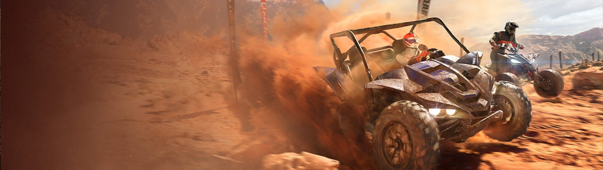

Overpass 2
I have been working with the Overpass 2 team sinse October 2022.
During my time on the projec I have played a key role in getting the games from alpha to its final shippable state.
My code and work spans throughout the games entire code base, I don't think there's any aspect of the games code that I did not touch in my time on this project. I have been tasked with finding, understanding and refactoring legacy code, as well as taking over and finishing work that was left in a half finished state. The systems and features I chose to highlight in the rest of this page are the larger and more tangible contributions from me.

Skill tree menu: Scrollable categories(top left). Hovered skill, info, cost, available points, reset panel(right top to bottom). Skill tree pannel showing all skills(center). Spent/total points(left).
This menu is usable with both mouse and keyboard, or a gamepad controller. Selecting skills, zooming and paning around in the center menu is posible wiht both control types.
Player progress: The players level, level progress, and currently held credits can be seen at the top of the menu.
I implemented the system in place for rewarding and keeping track of the player's level, acquired skillpoints, and currency.

Reward menu: Displays the sponsor objectives the player had for the race(top left, green if completed, red if failed).
Race rewards pannel on the right, shows current level and progression bar. Total accumulated XP from the race. Credit rewards from sponsor. Credit reward from Race. Total accumulated Credits. New unlocked vehicle accesories. (from top to bottom respectively)

Race Simulation: Simulates a race, calculated based on the opponent teams standing, the maps terrain type, correct wheels, vehicle upgrades and tier, and players skills.

Implemented sponsor menu, and following objectives connected to sponsors displayed in a race. As well as the mechanics of objectives.
Implemented a collection to keep track of all neccassary data for the track to be used throughout the game, such as tack section length, track looping, track start/end, surface, obtacle locations, track section ai-information.
Race start position rules:
- Player always starts last.
- If it's the first Main race, Player always starts last.
- otherwise, start according to the players seasonal ranking.
- In case of Side events, player always starts last.
- Players start in random positions when it's the first race.
- In any of the following races in the same lobby the players start according to their accumulated score.
- Players start according to the player number, Player 1 starts in first place, player 2 starts in second place and so on.
I've contributed much more, but on their own is quite scattered, so I won't go into detail about it here.
Showcase: